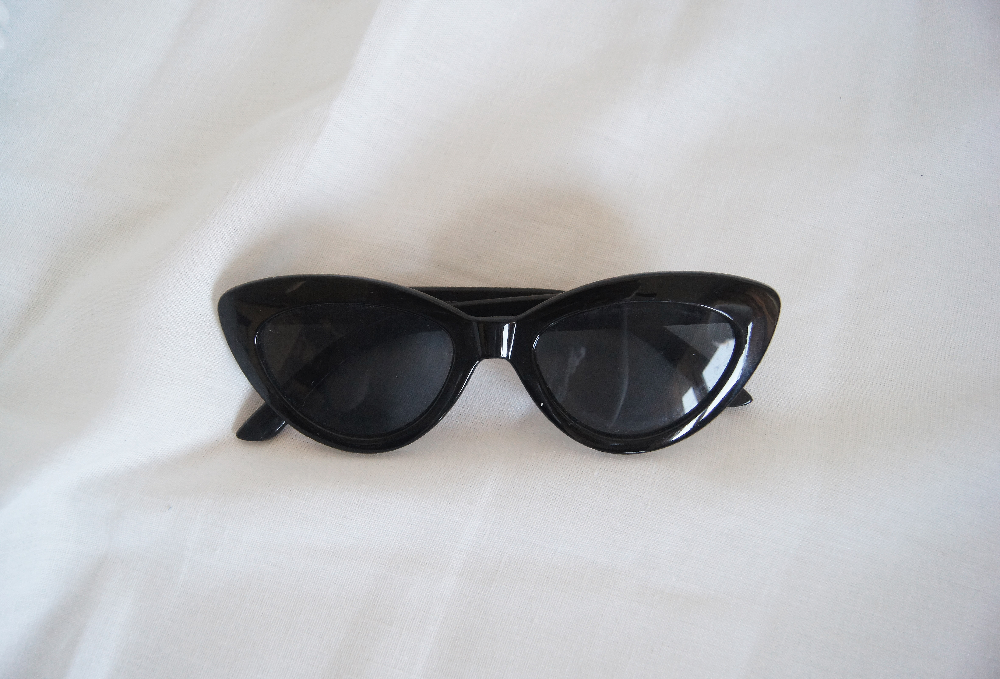

12 октября. Температура +14 градусов. Солнце. Сегодня я была удивлена погодой. Внезапно потеплело, и жизнь вдруг стала ярче и приятнее. Все-таки погода сильно влияет на мое настроение. И хотя где-то я читала статью, что метеозависимости не существует, все равно я чувствую, что намного более продуктивна в солнечную погоду.
